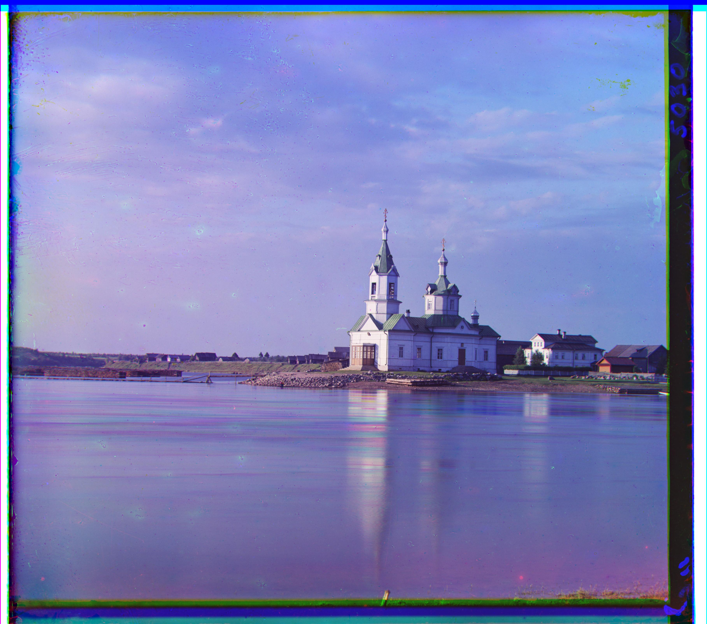
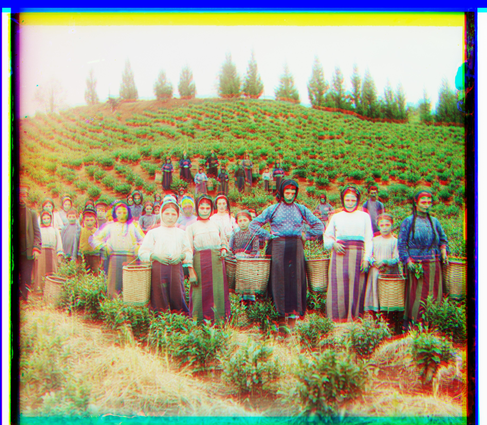

Part 1: A single-scale implementation on low-res images
Solution:
The single-scale implementation follows a straightforward approach to align
the RGB channels of digitized Prokudin-Gorskii glass plate images. My algorithm first divides each
input image into three equal parts representing the Blue, Green, and Red channels (ordered BGR from top
to bottom). Using the Blue channel as the reference, it performs a brute-force search within a specified
displacement window (typically [-20, 20] pixels) to find the optimal alignment for both Green and Red
channels.
The core alignment process uses either L2 norm (Euclidean distance) or Normalized Cross-Correlation
(NCC) as the similarity metric. For each potential displacement, the algorithm computes the overlap
region between the reference and target images, applies border cropping (10% on each side) to avoid edge
artifacts, and calculates the similarity score. The displacement that yields the best score is selected
as the optimal offset.
This implementation successfully handles low-resolution images (like .jpg files) by testing all possible
translations within the search window.
Cathedral
Green Offset: (2, 5)
Red Offset: (3, 12)
Monastery
Green Offset: (2, -3)
Red Offset: (2, 3)
Tobolsk
Green Offset: (3, 3)
Red Offset: (3, 6)
Part 2: A multiscale pyramid version that works on the large images
Solution:
The multiscale pyramid implementation uses a coarse-to-fine approach to handle high-resolution images
efficiently. The algorithm first builds image pyramids by recursively downsampling each level by a
factor of 0.5 until the image becomes smaller than 16 pixels. Starting from the coarsest level, it
performs alignment with a reduced search radius, then propagates and refines the results down through
each pyramid level with local adjustments. This hierarchical approach significantly reduces
computational complexity while maintaining alignment accuracy for large images.
To briefly summarize the pyramid construction and alignment process, the pyramid algorithm works
similarly to the Horner's method. Just as we can transform a polynomial like f(x) = x³ + x² + x
into x*(x*(x+1)) to reduce computation, the pyramid algorithm performs a continuous doubling process
that essentially "peels off" the final offset layer by layer. If we assume the final offsets are dx and
dy, they can always be represented in binary form. By decomposing this binary representation according
to powers of 2, we reveal the essence of the pyramid algorithm - it's systematically finding each bit of
the offset through a hierarchical search process, starting from the most significant bit at the coarsest
level down to the least significant bit at the finest level.

Church
Green Offset: (4, 25)
Red Offset: (-4, 58)
Time Cost: 5.031s
Emir
Green Offset: (24, 49)
Red Offset: (54, 94)
Time Cost: 5.461s

Harvesters
Green Offset: (16, 59)
Red Offset: (12, 94)
Time Cost: 5.541s
Icon
Green Offset: (17, 41)
Red Offset: (23, 90)
Time Cost: 5.254s
Italil
Green Offset: (21, 38)
Red Offset: (35, 76)
Time Cost: 5.385s
Lastochikino
Green Offset: (-2, -3)
Red Offset: (-9, 75)
Time Cost: 5.215s
Lugano
Green Offset: (-16, 41)
Red Offset: (-29, 93)
Time Cost: 5.451s
Melons
Green Offset: (11, 82)
Red Offset: (16, 94)
Time Cost: 5.033s
Self Portrait
Green Offset: (29, 79)
Red Offset: (57, 94)
Time Cost: 5.077s
Siren
Green Offset: (-6, 49)
Red Offset: (-25, 94)
Time Cost: 5.043s
Three Generations
Green Offset: (14, 53)
Red Offset: (13, 94)
Time Cost: 4.765s
Optimization:
After analyzing the results, it is clear that the multiscale pyramid approach performs
well on several images, including "Church", "Icon", "Italil", "Lastochikino",
"Lugano" and "Siren".
However, there are some images where the alignment is not as accurate, such as "Emir",
"Harvesters", "Melons", "Self Portrait", and "Three Generations". After my observation,
these problematic images exhibit significant y-axis displacement in the red channel, which suggests
that the pyramid search might get trapped in local optima due to the coarse-to-fine nature of the
algorithm.
To address this issue, I optimized my algorithm by implementing a refined search strategy: after
obtaining the initial dx and dy offsets from the pyramid search, I perform an additional brute-force
enumeration within a smaller window specifically in the y-direction (typically [-100, 100] pixels).
This
secondary search step helps recover from potential misalignments in the vertical direction that may
have
been introduced during the pyramid downsampling and upsampling process, ultimately improving the
final
alignment quality for these challenging images.
Before vs After Optimization
Emir - Before
Green Offset: (24, 49)
Red Offset: (54, 94)
Time Cost: 5.461s
Emir - After
Green Offset: (24, 49)
Red Offset: (54, 103)
Time Cost: 29.567s
Harvesters - Before
Green Offset: (16, 59)
Red Offset: (12, 94)
Time Cost: 5.541s
Harvesters - After
Green Offset: (16, 59)
Red Offset: (12, 124)
Time Cost: 30.908s
Melons - Before
Green Offset: (11, 82)
Red Offset: (16, 94)
Time Cost: 5.033s
Melons - After
Green Offset: (11, 82)
Red Offset: (16, 179)
Time Cost: 39.382s
Self Portrait - Before
Green Offset: (29, 79)
Red Offset: (57, 94)
Time Cost: 5.077s
Self Portrait - After
Green Offset: (29, 79)
Red Offset: (57, 177)
Time Cost: 40.573s
Three Generations - Before
Green Offset: (14, 53)
Red Offset: (13, 94)
Time Cost: 4.765s
Three Generations - After
Green Offset: (14, 53)
Red Offset: (13, 112)
Time Cost: 39.579s
Part 3: More examples of my own choosing
Additional Examples:
To further demonstrate the effectiveness of my multiscale pyramid algorithm, I selected two additional
images from the Prokudin-Gorskii collection that present different alignment challenges. These examples
showcase the algorithm's ability to handle diverse content and lighting conditions while maintaining
consistent performance across various image types.
Kapri
Green Offset: (-13, 46)
Red Offset: (-12, 103)
Time Cost: 20.410s
Khan
Green Offset: (9, 39)
Red Offset: (-7, 94)
Time Cost: 23.554s